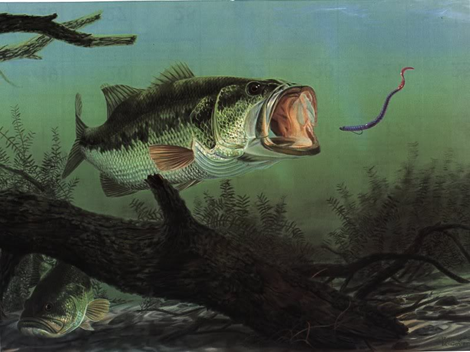

Welcome to the Fish web site. Everything you will know about Fish in this website
Fishes are called in latin:-Pieces
Largemouth bass and smallmouth bass are the most popular game fish in North America. It is also very popular in South Africa where the largemouth bass is often found in lakes, rivers, creeks, and dams. When fishing, lures or live bait will work. Lures that mimic baitfish, worms, crayfish, frogs, and mice are all effective.
A fish is any member of a group of animals that consist of all gill-bearing aquatic craniate animals that lack limbs with digits. They form a sister group to the tunicates, together forming the olfactores. Included in this definition are the living hagfish, lampreys, and cartilaginous and bony fish as well as various extinct related groups. Tetrapods emerged within lobe-finned fishes, so cladistically they are fish as well. However, traditionally fish are rendered obsolete or paraphyletic by excluding the tetrapods (i.e., the amphibians, reptiles, birds and mammals which all descended from within the same ancestry). Because in this manner the term "fish" is defined negatively as a paraphyletic group, it is not considered a formal taxonomic grouping in systematic biology. The traditional term pisces (also ichthyes) is considered a typological, but not a phylogenetic classification.
Input something in the input box:
Name :
this is the paragraph meant for j-query....please click the paragraph to erase it....!!!!
it uses the advanced libraries of javascript
bootstrap+angular js+jquery+deploying of website+command line+javascript+css+html that's all....!!!!!